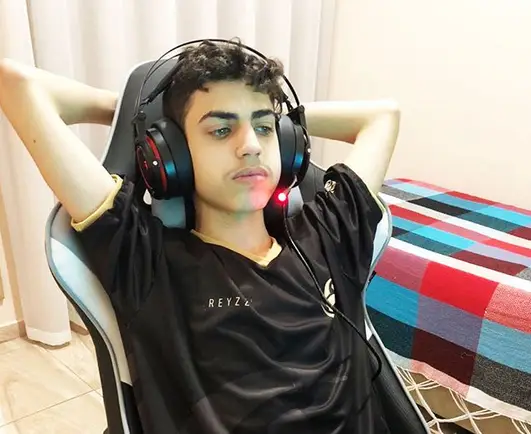

Fortnite: Seeyun anuncia saída da Team Vikings e fica "free agent"
Finalista na categoria de Melhor Atleta de Battle Royale do Prêmio eSports Brasil 2021, Igor "Seeyun" não continuará na Team Vikings em 2022. O badalado pro player de Fortnite realizou o anúncio da saída da organização por meio de suas redes sociais e afirmou estar livre no mercado. Na publicação, ele agradeceu a Kaique Rocha, zagueiro do Internacional, e João Pedro, atacante do Watford, ambos donos da organização, pela confiança em contratá-lo no ano passado.
De acordo com apuração do ge, o contrato firmado entre Seeyun e Team Vikings teria validade até o fim deste ano, mas o pro player não teve interesse em renová-lo e, portanto, decidiu sair. A decisão por parte do jogador, inclusive, já estava tomada há alguns meses.
A Team Vikings, por sua vez, tinha o desejo de manter Seeyun pelo menos para 2022, já que era o único representante da equipe na modalidade. No entanto, a organização optou por dar prioridade na definição da nova line-up de Valorant nas últimas semanas e acabou surpreendida em um primeiro momento pelo anúncio do pro player.
Contratado em abril de 2020, Seeyun chegou à Team Vikings com status de promessa, mas rapidamente se consolidou entre os principais nomes do cenário competitivo do Fortnite. Com a camisa da organização, ele conquistou duas vezes a Fortnite Champion Series (FNCS) e ficou no pódio em outras três edições da competição.